Despliegue, monitorización y escalabilidad de una plataforma de streaming educativo en AWS Academy Learner Lab, validada desde un entorno con restricciones de red.
En este proyecto se despliega, valida, monitoriza y se plantea la escalabilidad de una arquitectura cloud para una empresa ficticia de streaming educativo. La práctica está diseñada para realizarse íntegramente desde el aula, sin acceso al router del centro y asumiendo que SSH o ciertos puertos externos pueden estar bloqueados por el firewall del instituto.
| Campo | Valor |
|---|---|
| Empresa ficticia | StreamWave Media |
| Entorno | AWS Academy Learner Lab |
| Trabajo principal | Desplegar, validar, monitorizar y plantear escalabilidad de una arquitectura cloud |
| Restricción del centro | Sin acceso al router del instituto y con posibles bloqueos de firewall |
StreamWave Media es una empresa que ofrece vídeos educativos, documentales breves y material multimedia para centros de formación. Su necesidad es disponer de una infraestructura cloud inicial sencilla, escalable y económica que soporte una plataforma de streaming educativo, con posibilidad de crecer sin interrumpir el servicio.
La plataforma debe poder validarse desde un entorno con restricciones de red: sin acceso al router del instituto, con posible bloqueo de SSH y de puertos externos desde los equipos del aula. Las comprobaciones se realizan desde la consola de AWS, el navegador y, cuando sea necesario, desde AWS CloudShell.
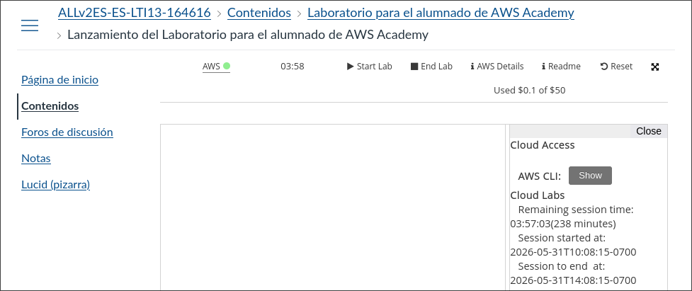
Región utilizada: us-east-1 — Estados Unidos (Norte de Virginia).
| Servicio | Estado en el laboratorio |
|---|---|
| Amazon EC2 | ✅ Disponible |
| Amazon S3 | ✅ Disponible |
| Amazon VPC | ✅ Disponible |
| Amazon CloudWatch | ✅ Disponible |
| AWS CloudShell | ✅ Disponible |
| Load Balancers (ELB) | ✅ Disponible — página accesible sin errores, permisos de lectura y creación presentes |
| CloudFront | ❌ Restringido — sin permisos IAM (cloudfront:ListDistributions denegado por la política del rol voclabs) |
| Auto Scaling Groups | ❌ Restringido — sin permisos IAM (autoscaling-plans:DescribeScalingPlans denegado por la política del rol voclabs) |
Regla de trabajo en el aula: Si un servicio no está permitido por el laboratorio de AWS Academy, no se sustituye por acciones fuera de AWS ni se intenta cambiar la red del instituto. Se documenta la limitación y se realiza el apartado como análisis técnico.
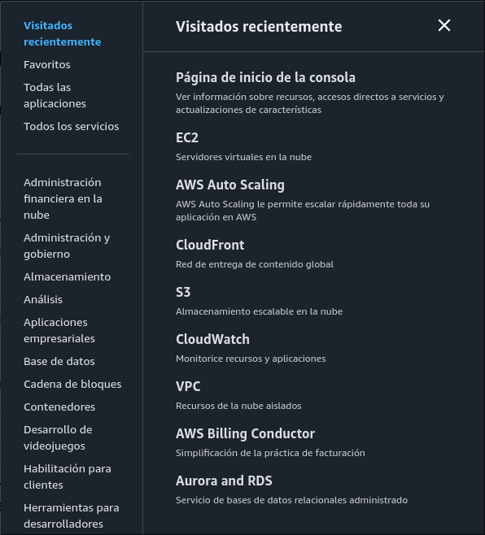
voclabs.streamwave-web.streamwave-sg.0.0.0.0/0.0.0.0.0/0, aunque la web inicial no use certificado.Nota: En el instituto puede estar bloqueada la salida por SSH. La práctica está diseñada para completarse sin conectarse por SSH.
Pegar este contenido en el apartado User Data antes de lanzar la instancia:
#!/bin/bash
yum update -y
yum install httpd -y
systemctl start httpd
systemctl enable httpd
cat > /var/www/html/index.html <<'EOF'
<html>
<head><title>StreamWave Media</title></head>
<body>
<h1>StreamWave Media</h1>
<p>Plataforma educativa de streaming desplegada en AWS.</p>
<p>Servidor web funcionando correctamente.</p>
</body>
</html>
EOFhttp://IP_PUBLICA.Si el firewall del instituto bloquea la prueba desde el navegador:
curl http://IP_PUBLICA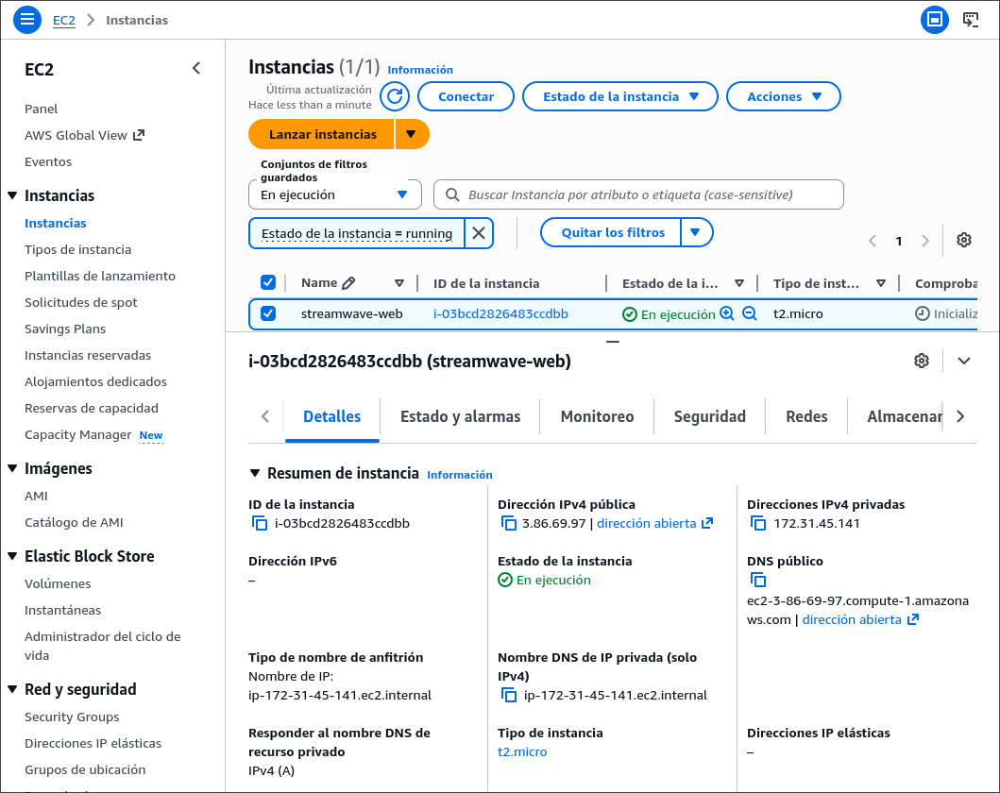
streamwave-web en estado Running con los dos Status Checks en verde.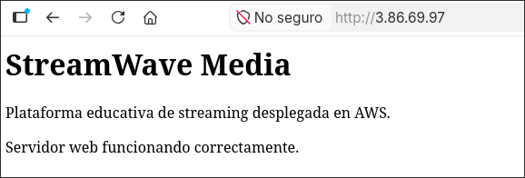
curl en CloudShell.streamwave-media-tu-nombre.videos/.trailers/.imagenes/.documentos/.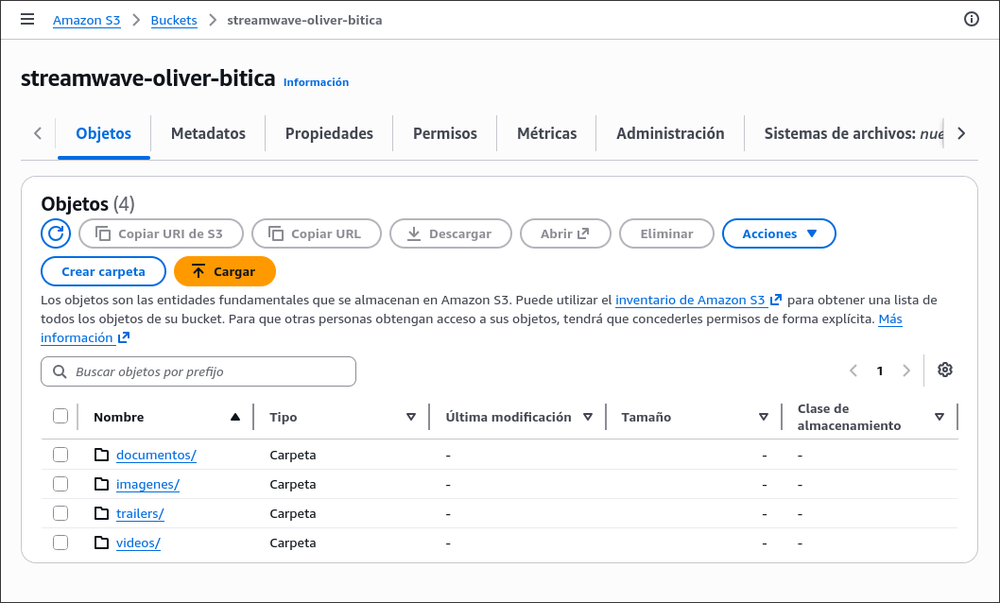
videos/, trailers/, imagenes/ y documentos/ con archivos visibles.cartel.html o descripcion.txt.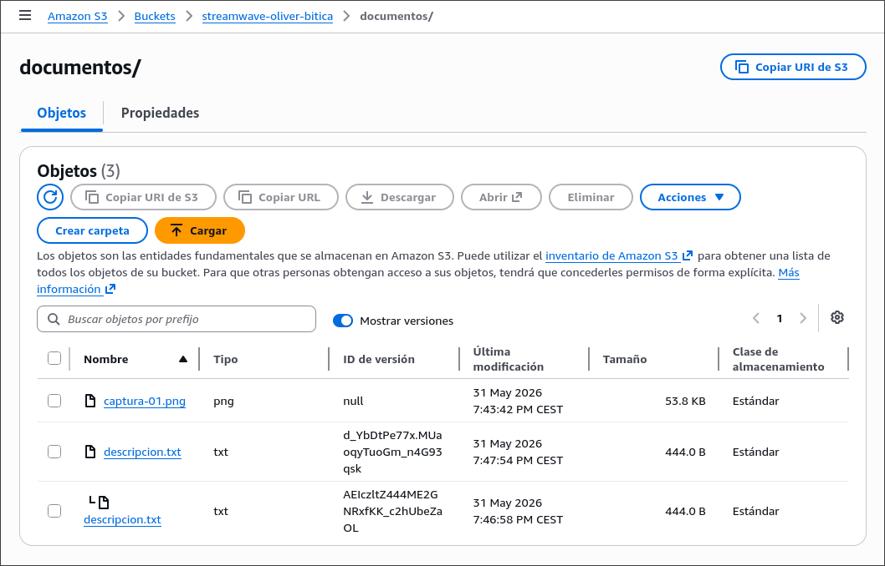
videos/ o documentos/.Si el laboratorio no permite completar la regla:
En una empresa real se configuraría una transición automática a S3 Standard-IA (Infrequent Access) a los 30 días, y a S3 Glacier Instant Retrieval a los 90 días, para los vídeos con acceso poco frecuente. Esto reduce significativamente el coste de almacenamiento sin eliminar el contenido.
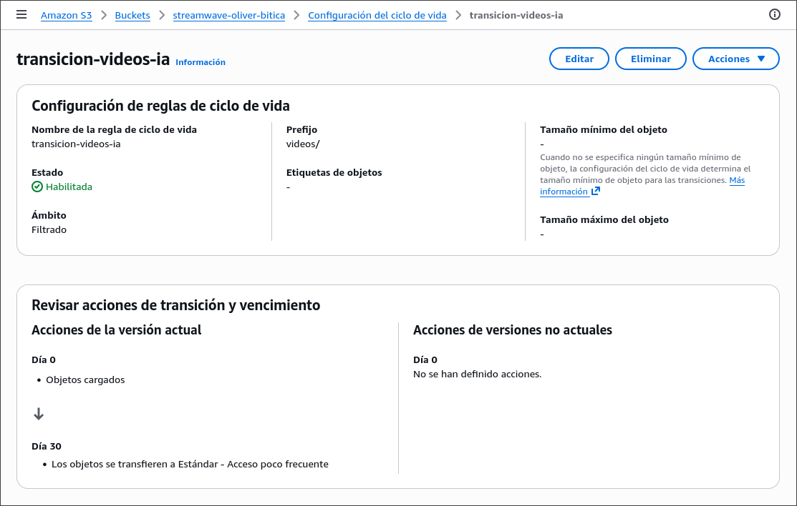
Aplicación empresarial: StreamWave Media no debería guardar los vídeos dentro de la instancia EC2. Si la instancia falla o se sustituye, se perdería contenido. S3 permite separar el servidor web del almacenamiento multimedia y facilita el crecimiento de la plataforma.
0.0.0.0/0.igw-....Explicación: La ruta
0.0.0.0/0hacia el IGW es la que permite que el tráfico HTTP entrante desde cualquier IP pública llegue a la instancia EC2. Sin esta ruta, la instancia no sería accesible desde Internet aunque el Security Group lo permitiera.
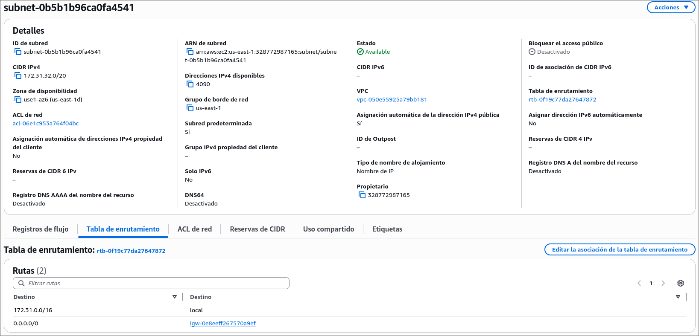
0.0.0.0/0 apuntando al Internet Gateway.Nota: Esta prueba se hace en AWS, no en el router del instituto. No modifica la red local del centro.
Resultado observado: Al eliminar la regla de puerto 80, la web deja de ser accesible (timeout o connection refused). Al restaurarla, el acceso se recupera de inmediato. Esto demuestra que el Security Group actúa como firewall a nivel de instancia, de forma completamente independiente de la red del instituto.
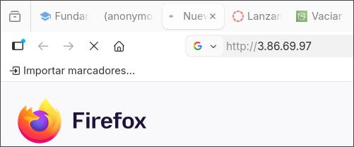
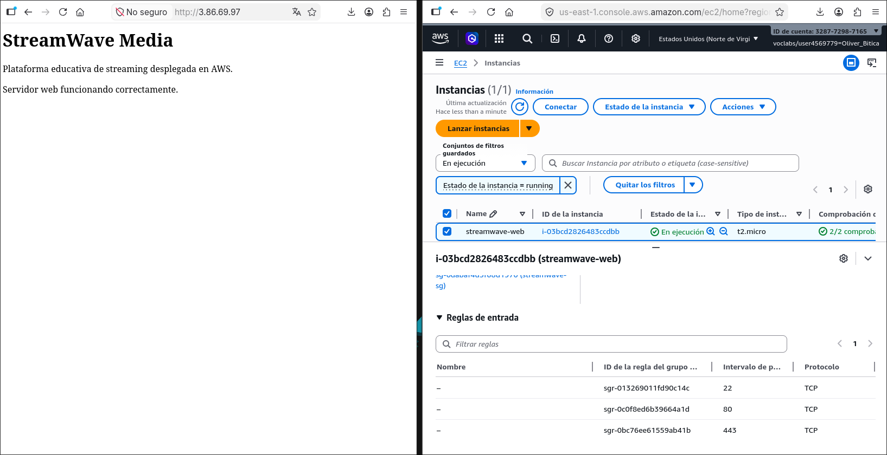
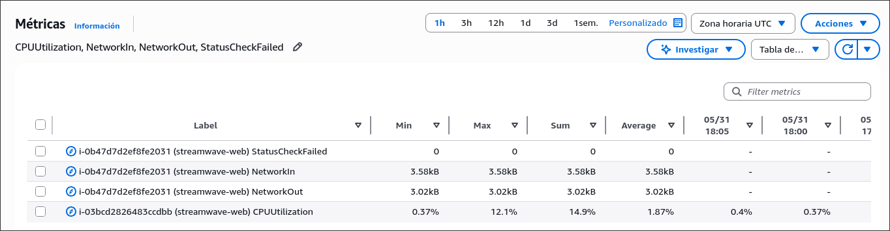
Opción A: Refrescar varias veces la web desde el navegador.
Opción B — si el navegador del centro no accede a la IP pública, abrir CloudShell y ejecutar:
for i in {1..30}; do
curl -s http://IP_PUBLICA > /dev/null
echo "Peticion $i enviada"
doneAnálisis:
- NetworkIn/NetworkOut: aumentan ligeramente al recibir y responder las peticiones HTTP, aunque los valores son bajos dado el reducido tamaño del HTML servido.
- CPUUtilization: permanece prácticamente estable (cercana al 0%). Servir una página HTML estática consume mínimos ciclos de CPU: Apache simplemente lee un archivo del disco y lo envía por red, sin procesamiento.
- Por qué genera poca carga: una web estática sin base de datos ni lógica de servidor apenas consume recursos. La carga real aparecería al introducir procesamiento dinámico, consultas a BD o transcodificación de vídeo.
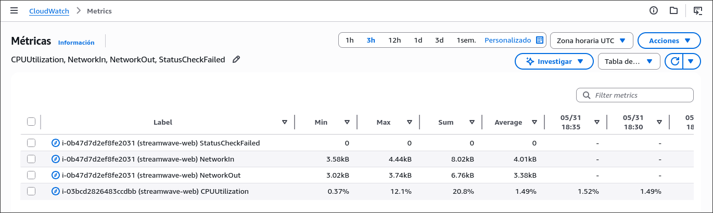
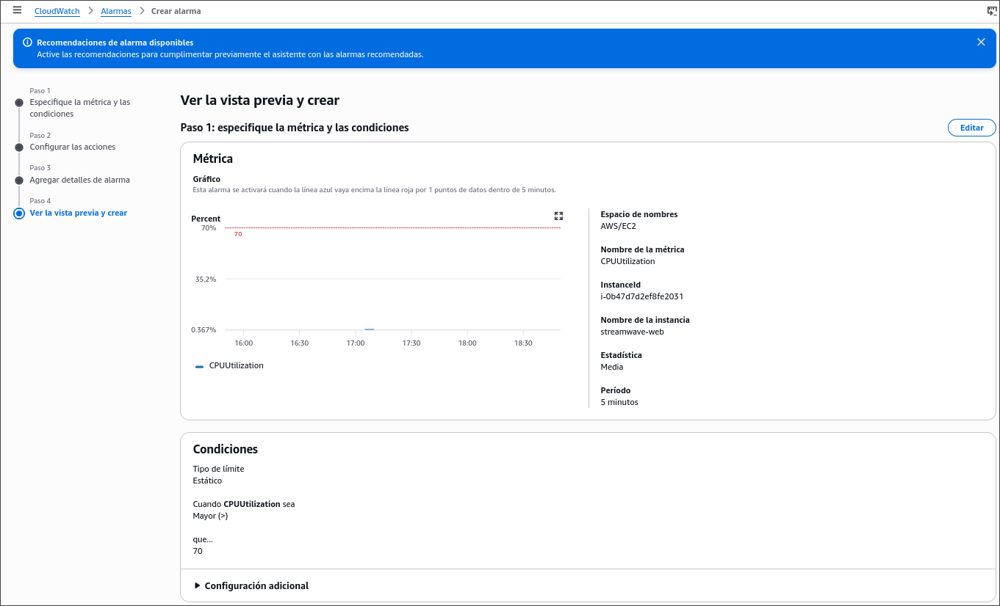
CPUUtilization creada en CloudWatch con umbral configurado al 70%.Pocos usuarios, web informativa sencilla, una instancia EC2 pequeña, recursos multimedia en S3, monitorización con CloudWatch.
Solución: Una instancia EC2
t2.microes suficiente para servir a cientos de usuarios concurrentes con contenido estático. Los recursos multimedia se alojan en S3, separando almacenamiento de servidor. CloudWatch monitoriza la instancia para detectar anomalías. No se sobredimensiona: el coste sería innecesario y la demanda no lo justifica en esta fase inicial.
Tráfico creciente entre las 9:00 y las 14:00, picos predecibles.
Solución: Implementar Auto Scaling con una política basada en métricas de CloudWatch (CPUUtilization > 60% o número de peticiones elevado). Se crea una AMI de la instancia actual como plantilla de lanzamiento para replicar servidores idénticos. El grupo escala a 2–3 instancias durante el horario lectivo y vuelve a 1 fuera de él. Esto optimiza coste y capacidad de forma automática sin intervención manual.
Acceso desde distintas ubicaciones geográficas con alta latencia.
Solución: Implementar Amazon CloudFront como CDN delante del contenido estático y multimedia. S3 actúa como origen de imágenes, trailers y documentos. CloudFront replica el contenido en edge locations cercanos a los usuarios, reduciendo drásticamente la latencia de descarga. El servidor EC2 solo recibe peticiones que no puedan cachearse. Una CDN reduce la latencia porque el usuario descarga desde un nodo cercano en lugar de desde la región de AWS, y descarga trabajo del servidor EC2 al evitar que sirva el mismo contenido repetidamente.
La instancia EC2 deja de responder.
Solución: Desplegar al menos dos instancias EC2 detrás de un Application Load Balancer (ALB), distribuidas en dos zonas de disponibilidad distintas (por ejemplo
us-east-1ayus-east-1b). El ALB realiza health checks periódicos; si una instancia falla, deja de enviarle tráfico automáticamente. CloudWatch detectaría el fallo medianteStatusCheckFailedy podría activar una alarma o acción de Auto Scaling para reemplazar la instancia caída. El servicio se mantiene activo sin intervención manual y sin que el usuario perciba la interrupción.
La empresa pasa de decenas a miles de vídeos.
Solución: usar S3 con clases de almacenamiento por frecuencia de acceso y reglas de ciclo de vida automáticas:
| Clase | Cuándo | Coste relativo |
|---|---|---|
| S3 Standard | Vídeos recientes y frecuentes | Alto |
| S3 Standard-IA | Vídeos de más de 30 días | Medio |
| S3 Glacier Instant Retrieval | Vídeos archivados +90 días | Bajo |
Las reglas de ciclo de vida mueven objetos entre clases automáticamente. La documentación interna se mantiene en una carpeta separada con permisos restringidos. Este enfoque escala ilimitadamente en capacidad y reduce el coste de almacenamiento hasta un 70% respecto a mantener todo en S3 Standard.
La empresa detecta que el coste cloud crece demasiado.
Solución:
- Revisar instancias EC2 encendidas sin uso y terminarlas.
- Eliminar recursos de pruebas: snapshots, AMIs antiguas, buckets vacíos.
- Usar métricas de CloudWatch para ajustar el tipo de instancia al uso real (rightsizing).
- Revisar la transferencia de datos: CloudFront reduce los costes de data transfer out desde S3 y EC2.
- Aplicar reglas de ciclo de vida en S3 para mover contenido antiguo a clases más baratas.
- Usar AWS Cost Explorer para identificar los recursos que más facturan mes a mes.
Diagrama:
Internet
│
▼
[EC2 t2.micro — streamwave-web]
│
┌──────┴──────┐
▼ ▼
[S3 bucket] [CloudWatch]
(videos, (métricas y
imágenes, alarmas)
docs)
VPC por defecto → Subred pública → Internet GatewayPor qué no es imprescindible un Load Balancer: Con 500 usuarios diarios y contenido estático, una sola instancia t2.micro gestiona sin problema el tráfico concurrente estimado (decenas de usuarios simultáneos). Añadir un Load Balancer introduciría un coste mensual fijo sin beneficio real en este volumen.
Métricas a vigilar: CPUUtilization (normal < 40%), NetworkIn/Out, StatusCheckFailed.
Diagrama:
Internet
│
▼
[Application Load Balancer]
│ │
▼ ▼
[EC2 #1] [EC2 #2] [EC2 #3 — Auto Scaling]
AZ-1a AZ-1b (se lanza si CPU > 60%)
│
[S3 bucket] ← origen multimedia
│
[CloudWatch + Auto Scaling Policy]Cambios respecto al caso anterior:
Diagrama:
Usuarios en Europa, Asia, América
│
▼
[CloudFront — Edge Locations globales]
│ │
▼ ▼
[S3 — origen [ALB → EC2 x2 + Auto Scaling]
contenido (peticiones dinámicas)
estático]
[CloudWatch]Qué sirve CloudFront y qué EC2:
Impacto en el rendimiento percibido: El usuario descarga el contenido multimedia desde el edge location más cercano (latencia < 50 ms) en lugar de desde la región de AWS (latencia 100–300 ms). La experiencia mejora drásticamente para usuarios en Europa, Asia y Latinoamérica sin modificar la infraestructura de origen.
| Arquitectura | Componentes | Ventajas | Inconvenientes | Coste relativo |
|---|---|---|---|---|
| Mínima | EC2 + S3 + CloudWatch | Simple, económica, fácil de gestionar | Punto único de fallo, no escala automáticamente | Bajo |
| Escalable | ALB + varias EC2 + Auto Scaling + S3 + CloudWatch | Alta disponibilidad, escala automática, tolerante a fallos | Mayor complejidad y coste fijo del LB | Medio |
| Internacional | CloudFront + S3 + ALB + EC2 + Auto Scaling | Latencia global reducida, CDN descarga el origen, máxima escalabilidad | Más costosa, configuración avanzada de caché y CloudFront | Alto |
Recursos que generan coste en StreamWave Media:
t2.micro puede suponer ~$8–10/mes.Por qué una plataforma multimedia aumenta costes rápidamente: Cada reproducción de vídeo implica transferencia de datos. Con miles de usuarios reproduciendo contenido en HD, el ancho de banda puede convertirse en el coste dominante, creciendo linealmente con el número de reproducciones y el peso de cada vídeo.
Medidas concretas aplicadas a StreamWave Media:
Nota: La limpieza forma parte de la práctica. En cloud, dejar recursos activos puede generar costes aunque no se estén usando.
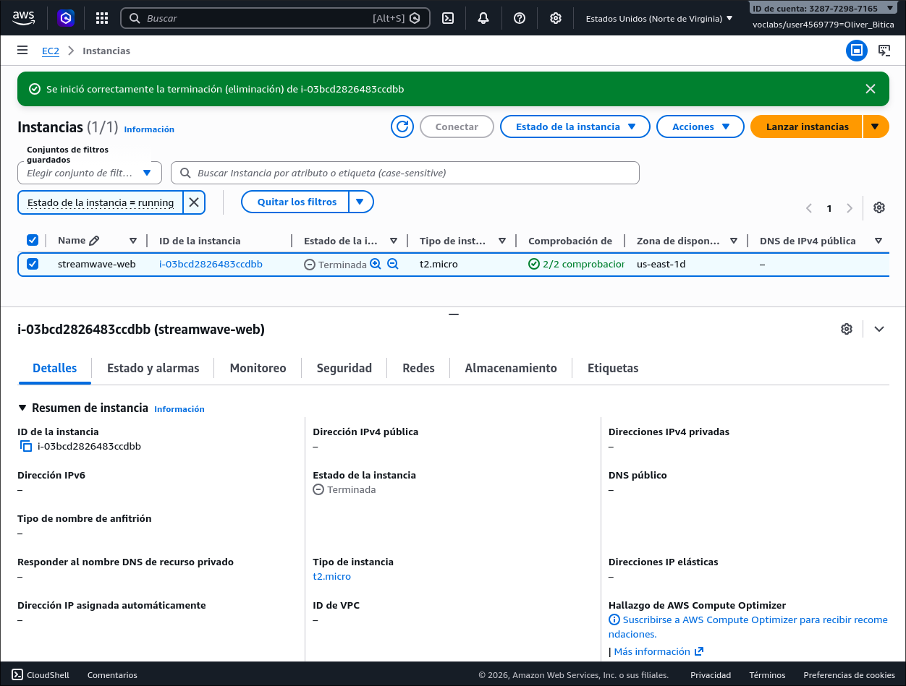
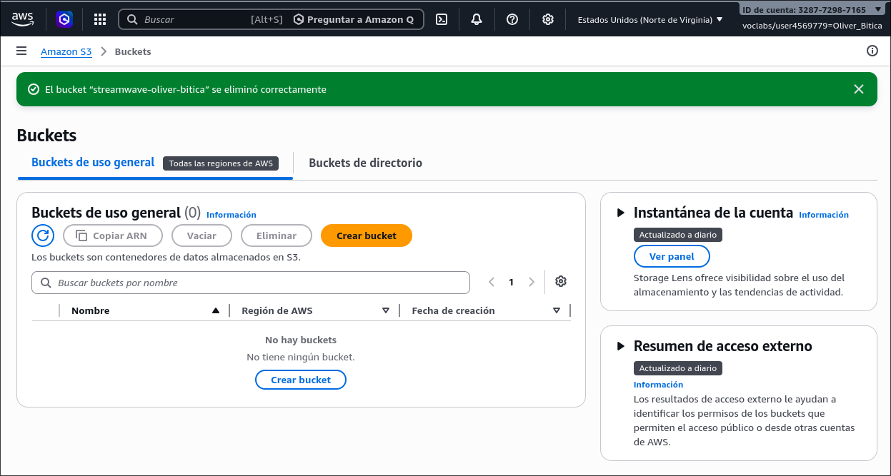
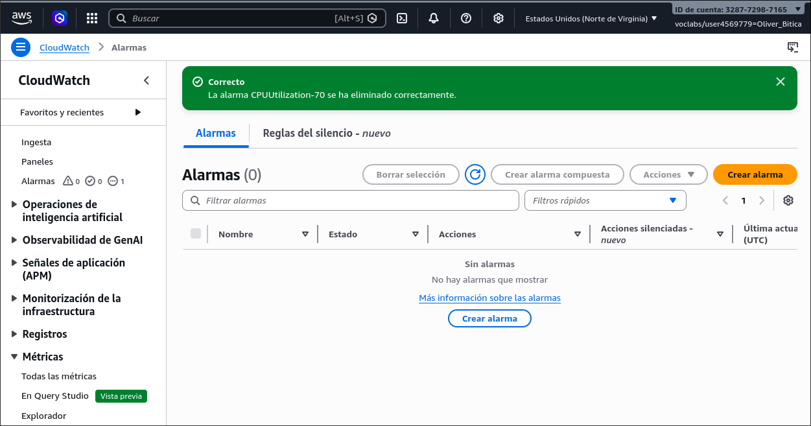
Una arquitectura cloud no consiste solo en crear recursos, sino en diseñar una solución que funcione en un entorno real, que pueda crecer, que sea medible, que controle costes y que se adapte a restricciones como las de una red de instituto. StreamWave Media parte de una base mínima y viable, con capacidad de evolucionar hacia una plataforma global escalable conforme crezcan sus usuarios y necesidades.